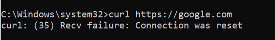

Кто-то заметил проблемы? В прошлый раз как-то мощней все упало
Российские пользователи начали жаловаться на сбой в работе крупных операторов связи. Сервисы «Сбой.рф» и Downdetector зафиксировали проблемы с работой ютуба, основных мессенджеров вроде WhatsApp и Telegram, сайтов крупных российских компаний, игровой платформы Steam и серверов игры Genshin Impact.
сайты еле открываются, тг не але (мегавонь)
У меня сервер упал как и вся сеть хостинга privex IO
p.s сам хостинг как и сервак работали. Не работало подключение к ним прямое с моей стороны, а вот с добавлениеm иного сервера все фурычило
ТГ работает (какой-то хмырь известную разводилкку “Это ты?” прямо сейчас прислал  )
)
Ютуб прямо сейчас смотрю, тоже нет проблем.
РТК, Центр
Что происходит? Прямо сейчас все заработало…
Twitch.tv как лежал, так и лежит. С ВПН работает отлично. До этого лагало всё, в том числе и телеграм.
Твич действительно до сих пор мёртв
Урал, уфанет, твич и ютуб работают, юзаю YTDisBystro
Все работает, Москва Алмател.
Йота вроде дышит, но твоя стримы не открываются, как будто скорость порезали.
У Мегафона, с около 2025-01-24T07:30:00Z, отваливался весь зарубежный интернет.
Сглазил, теперь твич постоянно висит в буферизации
Опять не работает
Опять заработало, буду отписывать теперь только в случае длительных сбоев
Не работает зарубежный интернет на мегафоне. Либо крайне медленно.
Ответ техподдержки:
Сегодня могут наблюдаться сложности в работе различных сайтов и приложений. Мы проверили и уверены - наша сеть работает стабильно, ограничений со стороны Мегафона нет. Трудности возникли по независящим от нас причинам
Явно пытаются на что-то намекнуть. Либо кидают камень в сторону РКН, либо может будут разыгрывать сценарий, что это на той стороне магистралий нас блокируют. Но в целом тревожно.
Ничего себе

{kind=link}
{kind=link}
Яндекс, вконтакте, мосру открываются
в DNS Jumper больше половины адресов DNS выдают ошибку.
У Мегафона, похоже, очень серьёзные проблемы. Самое большое кол-во жалоб на сайтах фиксирующих сбои интернета. Даже личный кабинет Мегафона открывается с сильной задержкой и отображается практически в нерабочем состоянии.
Сегодня Йота aka Мегафон, прилегла на часа полтора, а вместе с ней и все подключения, ну кроме CF с Warp конфигом через AWG. Амнезия легла соответственно со всеми моими VPS внутри. Сейчас вот уже около полутора часов полет нормальный. Сколь надолго пока трудно сказать конечно, хотя у Йоты это не первый такой сбой конечно, и по продолжительности не самый долгий, бывало и хуже.
У меня бот в телеге лежащий на vps не мог достучаться до пары западных сайтов, до Спотифая например. Видимо не только у Мегафона траблы
Всегда сижу под udp vpn в нск йоте, в линуксе. Внутри впна ходит dnscrypt (его сервера по udp:443, не doh). Сегодня вечером в логах dnscrypt заметил, что иногда на запрос уходит 6 секунд (причём, разные резолверы). Такое уже было 20 января 2025 утром (или 19 января вечером). Не знаю, связано ли или это от долгой работы. Возможно, совпадение. Но отключение/запуск службы вроде не влияют. Может, перезагрузка компа поможет.
На ростелекоме на другом компе всё нормально с doh оперы под win7.
Предыдущий глобальный сбой был 14 января 2025.
Возможно, 6 секунд это 5 секунд таймаут + новый запрос.
Спойлер
{kind=link}
мрак какой
На nag пишут icmp работал гладко. Не похоже на ddos.
похоже на Частичное нарушение работы инета в Крыму 11.01.25 ?
На рт сайты начали без фейк пакета открываться на одной только фрагментации,видео на ютюбе тоже работает, но гавнюха ошибками сыпет.
Вообще, с мегафоном проблемы начались давно, ещё даже до 2022. У одного из моих провайдеров много маршрутов шло через узлы мегафона, там очень часто возникали нарушения связности. Сейчас, похоже, стало совсем плохо.
Тут выше предположили, что виновато обновление ТСПУ, но почему магистрали мегафона лежали (транзитный трафик других провайдеров)? ТСПУ, как-бы, абонентов провайдера охраняет от угроз, а не магистрали.
У ICMP обычно высокий приоритет. Хотя хз как оно на самом деле было.
ддос это перегрузка сети, чтобы не проходил никакой трафик, в том числе icmp (хотя тут может быть многое, может быть маршрут для icmp был другой, который не под ддосом)
По вчерашнему сбою есть вот такая информация
{kind=link}
{kind=link}
{kind=link}
сейчас все стало возвращаться к отметке 60
можно было сказать, что перезагрузка ТСПУ помогает временно
{kind=link}
и да, никаким DDOSом не пахнет, все графики говорят об обратном
меня этот инцидент никак не затронул, затронул он вас или нет непонятно. у меня в тот день и до сих пор пинг до германии стал на 5-8мс меньше. а где вы живёте что у вас пинг до америки 28мс?
то что его так подотпустило больше выходит из нормы, но да, в рабочее время 28ms это весело
{kind=link}
геолокация -3000км на оси Y от г.Москва
По-моему это все московский Cloudflare…